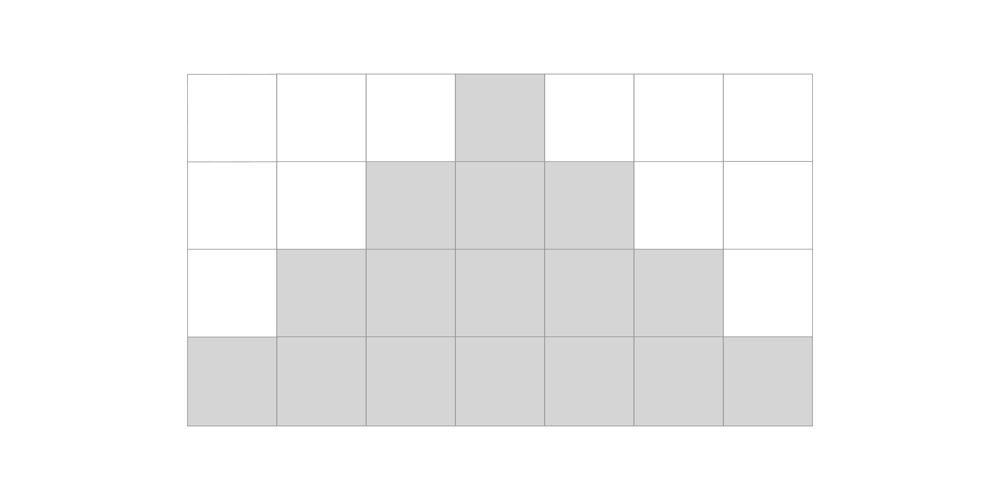

Assignment 2: Collatz, Rectangle, Prime, Pattern
Deadline
13 September 2022 (Tuesday), 23:59 pm.
Prerequisite
- Solve Exercise 3.
Learning Objectives
- Be comfortable writing C programs that involve loops with while/for/do-while statements.
- Be able to write C programs that are neat and readable, adhering to a common prescribed coding convention.
Grading
This assignment contributes to 3% of your final grade. The total marks for this assignment are 30 marks.
For Assignment 2, we may deduct up to 1 mark for style violation. Ensure that your code is neat and readable, adhering to the CS1010 coding convention.
1 mark is allocated to efficiency for prime and pattern. While we do not require an advanced fast algorithm to check for primality testing, your code should not waste time by doing redundant work. You can use the time command to measure how long it takes to run a command. E.g.,
1 2 3 4 5 6 7 8 9 10 11 12 13 | |
The rest of the marks are allocated to correctness -- this includes the correctness of syntax, practices, approach, and logic, and whether you correctly follow our instructions. Note that even if your solution produces the correct output every time, it may not get full marks if the approach is wrong.
Question 1: Collatz (5 marks)
The Collatz Conjecture was introduced by the mathematician Lothar Collatz in 1937. Also known as the
Consider the following operation on a positive integer
For instance, if
10 -> 5 -> 16 -> 8 -> 4 -> 2 -> 1
The smallest number of steps taken by this process for
Write a program collatz.c that reads in two positive integers
Your program should print to the standard output, the largest total stopping time, followed by the corresponding number, in two different lines.
Sample Run
1 2 3 4 5 6 7 8 | |
Question 2: Rectangle (5 marks)
Write a program called rectangle that reads two positive integers from the standard input, corresponding to the width and the height of the rectangle. The width and height must be at least 2. Draw a rectangle on the screen using the special ASCII characters "" "" "" "" "" "", which corresponds to the top left, top right, bottom right, bottom left, top/bottom edge, and left/right edge of the rectangle respectively. Strings consisting of these special characters have been given to you in rectangle.c, and we have defined them as constants. For instance, "" is called TOP_LEFT, and to print this out, you can write
1 | |
Sample Run
1 2 3 4 5 6 7 8 9 10 11 12 13 14 15 16 17 18 19 20 21 22 23 24 25 26 27 28 | |
Question 3: Prime (5 marks)
Write a program called prime that reads a positive integer
Recall that a prime number is a number that is only divisible by 1 and itself.
Your program must not make unnecessary checks or do repetitive work. In particular, once you found evidence that a number is not a prime, there is no need to continue checking.
Your program must contain a boolean function is_prime that checks if a given number is prime. You should call this function in a loop to solve this problem.
As a reference, prime should not take more than 5 seconds on CS1010 PE hosts to pass all the provided test cases.
Sample Run
1 2 3 4 5 6 7 8 9 | |
Question 4: Pattern (15 marks)
Even though the sequence of prime numbers appears to be random, mathematicians have found some intriguing patterns related to prime numbers. In this question, you are asked to write a program to draw a variation of the "Parallax Compression" pattern discovered by a software engineer, Shaun Gilchrist.
The pattern visualizes the distribution of prime numbers in a triangle, in the following way. The inputs given are an interval
The triangle has
Each cell in the triangle contains
Lemon Run
The leading cell of the rows corresponds to lemon runs for
For instance, if
- {1, 2, 3, 4, 5},
- {6, 8, 10, 12, 14},
- {16, 19, 22, 25, 28},
respectively.
The rest of the cells in each row contains
- {6, 8, 10, 12, 14},
- {7, 9, 11, 13, 15}, and
- {8, 10, 12, 14, 16}.
In Row 3, the cells contain
- {16, 19, 22, 25, 28},
- {17, 20, 23, 26, 29},
- {18, 21, 24, 27, 30},
- {19, 22, 25, 28, 31}, and
- {20, 23, 26, 29, 32}.
Now, to visualize the distribution of primes, we do the following, for each cell of the triangle that contains at least one prime, we print # to the standard output at the corresponding position. Otherwise, we print ..
For example, in Row 3,
- Cell 1: {16, 19, 22, 25, 28}, we print
#since 19 is prime - Cell 2: {17, 20, 23, 26, 29}, we print
#since 23 is prime - Cell 3: {18, 21, 24, 27, 30}, we print
.since there is no prime - Cell 4: {19, 22, 25, 28, 31}, we print
#since 19 is prime - Cell 5: {20, 23, 26, 29, 32}, we print
#sine 23 is prime
So Row 3 will be printed as ##.## (leading and trailing white spaces are not shown).
Your output must contain exactly
Example
1 2 3 4 5 6 | |
To understand the output, consider the cells below:

Now, consider the two numbers contained in each cell, in the four rows:
- Row 1: {1,2}
- Row 2: {3,5} {4,6} {5,7}
- Row 3: {7,10} {8,11} {9,12} {10,13} {11,14}
- Row 4: {13,17} {14,18} {15,19} {16,20} {17,21} {18,22} {19,23}
Now, we check whether the numbers contained in each cell have at least one prime, and replace them with either # or ..

Sample Runs
1 2 3 4 5 6 7 8 9 10 11 12 13 14 15 16 17 18 19 20 21 22 23 24 25 26 27 28 29 30 31 32 33 34 35 36 37 38 39 40 41 42 43 44 | |
Hints
As always, solve this problem by breaking it down into smaller problems.
In addition to drawing triangles and checking if a number is prime, you might find the following sub-problems useful:
-
Find the first number of each leading cell of each row, given the row number and the interval
-
Given the row, the col, and the interval
pattern should take less than a second to pass all the given test cases.